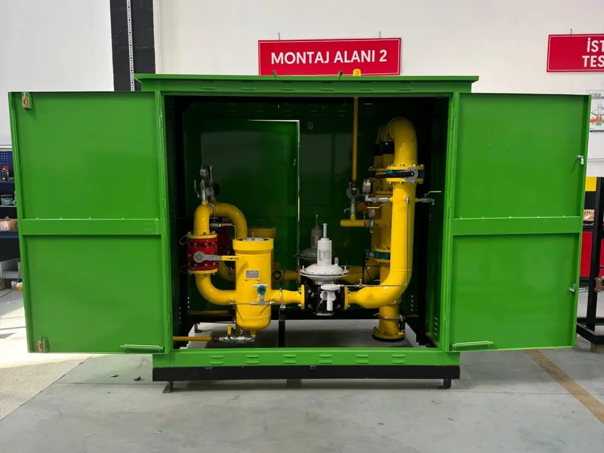

İGDAŞ standartlarına tam uyumlu, yüksek kapasiteli bölge gaz basınç düşürme istasyonu imalatımız.
Yüksek debili bölge dağıtım hatları ve endüstriyel tesisler için hassas regülasyon ve maksimum emniyet teknolojisi.

RS-B 5000 m³/h tipi istasyonlarımız, bölge dağıtım şebekeleri ve büyük ölçekli sanayi tesislerinin anlık gaz ihtiyaçlarını sıfır hata ile karşılamak üzere tasarlanmıştır. Çift hatlı (1 Asıl + 1 Yedek) mimarisi sayesinde kesintisiz gaz akışı garanti altına alınır.
Şehir ana şebekesinden yerel dağıtım hatlarına gaz aktarımı yapan bölge giriş regülasyon merkezleri.
Demir-çelik, çimento, seramik ve cam sanayii gibi yüksek hacimli gaz tüketen büyük ölçekli tesisler.
Doğalgaz çevrim santralleri, kojenerasyon ve trijenerasyon tesislerinin yüksek debili besleme hatları.
Organize Sanayi Bölgelerinin ana şebeke girişlerinde merkezi basınç düşürme ve hat dengeleme istasyonu.
Gaz Tedarik Sistemleri - Gaz basınç düşürme istasyonları - Fonksiyonel gereksinimler standardına tam uyum.
Giriş basıncı 100 bar'a kadar olan gaz regülasyon tesisleri emniyet ve tasarım kriterleri.
Avrupa Birliği Basınçlı Ekipmanlar Direktifi'ne (PED) uygun kaynak, test ve malzeme sertifikasyonu.
İstasyonlarımız, giriş şebekesindeki agresif yüksek basıncı, bölge ve tesis içi güvenli çalışma basıncına mükemmel bir kararlılıkla indirger.
| İstasyon Bölümü | Flanş ve Gövde Dayanımı (Nominal) | Operasyonel Basınç Aralığı (Bar) |
|---|---|---|
| Giriş Hattı (Inlet) | ANSI Class 150 | 12 Bar — 19 Bar (Yüksek / Orta Basınç Segmenti) |
| Çıkış Hattı (Outlet) | ANSI Class 150 | 1 Bar — 5 Bar (Güvenli Bölge ve Proses Dağıtımı) |